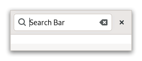

Gtk.SearchBar¶
Example¶
- Subclasses:
None
Methods¶
- Inherited:
Gtk.Widget (181), GObject.Object (37), Gtk.Accessible (16), Gtk.Buildable (1)
- Structs:
class |
|
|
|
|
|
|
|
|
|
|
|
|
Virtual Methods¶
- Inherited:
Gtk.Widget (25), GObject.Object (7), Gtk.Accessible (6), Gtk.Buildable (9)
Properties¶
- Inherited:
Name |
Type |
Flags |
Short Description |
|---|---|---|---|
r/w/c/en |
|||
r/w/c/en |
|||
r/w/en |
|||
r/w/c/en |
Signals¶
- Inherited:
Fields¶
- Inherited:
Class Details¶
- class Gtk.SearchBar(**kwargs)¶
- Bases:
- Abstract:
No
GtkSearchBaris a container made to have a search entry.An example
Gtk.SearchBarIt can also contain additional widgets, such as drop-down menus, or buttons. The search bar would appear when a search is started through typing on the keyboard, or the application’s search mode is toggled on.
For keyboard presses to start a search, the search bar must be told of a widget to capture key events from through [method`Gtk`.SearchBar.set_key_capture_widget]. This widget will typically be the top-level window, or a parent container of the search bar. Common shortcuts such as Ctrl+F should be handled as an application action, or through the menu items.
You will also need to tell the search bar about which entry you are using as your search entry using [method`Gtk`.SearchBar.connect_entry].
- Creating a search bar
The following example shows you how to create a more complex search entry.
- Shortcuts and Gestures
GtkSearchBarsupports the following keyboard shortcuts:<kbd>Escape</kbd> hides the search bar.
- CSS nodes
`` searchbar ╰── revealer
- ╰── box
├── [child] ╰── [button.close]
GtkSearchBarhas a main CSS node with name searchbar. It has a child node with name revealer that contains a node with name box. The box node contains both the CSS node of the child widget as well as an optional button node which gets the .close style class applied.- Accessibility
GtkSearchBaruses theGtk.AccessibleRole.SEARCHrole.- classmethod new()[source]¶
- Returns:
a new
GtkSearchBar- Return type:
Creates a
GtkSearchBar.You will need to tell it about which widget is going to be your text entry using [method`Gtk`.SearchBar.connect_entry].
- connect_entry(entry)[source]¶
- Parameters:
entry (
Gtk.Editable) – aGtkEditable
Connects the
GtkEditablewidget passed as the one to be used in this search bar.The entry should be a descendant of the search bar. Calling this function manually is only required if the entry isn’t the direct child of the search bar (as in our main example).
- get_child()[source]¶
- Returns:
the child widget of self
- Return type:
Gtk.WidgetorNone
Gets the child widget of self.
- get_key_capture_widget()[source]¶
- Returns:
The key capture widget.
- Return type:
Gtk.WidgetorNone
Gets the widget that self is capturing key events from.
- get_search_mode()[source]¶
- Returns:
whether search mode is toggled on
- Return type:
Returns whether the search mode is on or off.
- get_show_close_button()[source]¶
- Returns:
whether the close button is shown
- Return type:
Returns whether the close button is shown.
- set_child(child)[source]¶
- Parameters:
child (
Gtk.WidgetorNone) – the child widget
Sets the child widget of self.
- set_key_capture_widget(widget)[source]¶
- Parameters:
widget (
Gtk.WidgetorNone) – aGtkWidget
Sets widget as the widget that self will capture key events from.
If key events are handled by the search bar, the bar will be shown, and the entry populated with the entered text.
Note that despite the name of this function, the events are only ‘captured’ in the bubble phase, which means that editable child widgets of widget will receive text input before it gets captured. If that is not desired, you can capture and forward the events yourself with [method`Gtk`.EventControllerKey.forward].
- set_search_mode(search_mode)[source]¶
- Parameters:
search_mode (
bool) – the new state of the search mode
Switches the search mode on or off.
- set_show_close_button(visible)[source]¶
- Parameters:
visible (
bool) – whether the close button will be shown or not
Shows or hides the close button.
Applications that already have a “search” toggle button should not show a close button in their search bar, as it duplicates the role of the toggle button.
Property Details¶
- Gtk.SearchBar.props.child¶
- Name:
child- Type:
- Default Value:
- Flags:
The child widget.
- Gtk.SearchBar.props.key_capture_widget¶
- Name:
key-capture-widget- Type:
- Default Value:
- Flags:
The key capture widget.
- Gtk.SearchBar.props.search_mode_enabled¶
- Name:
search-mode-enabled- Type:
- Default Value:
- Flags:
Whether the search mode is on and the search bar shown.